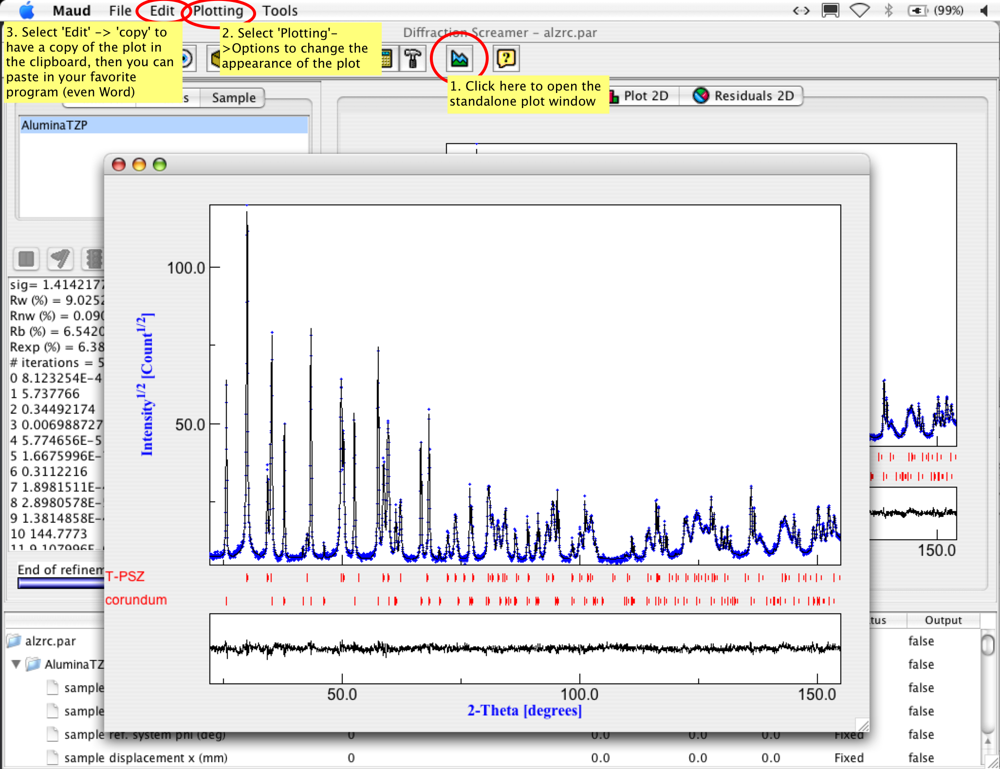
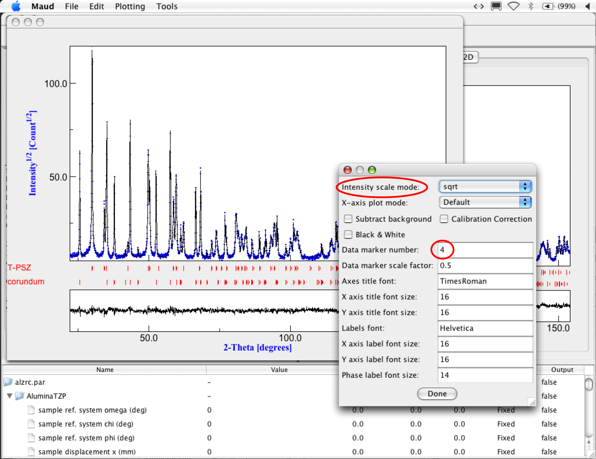
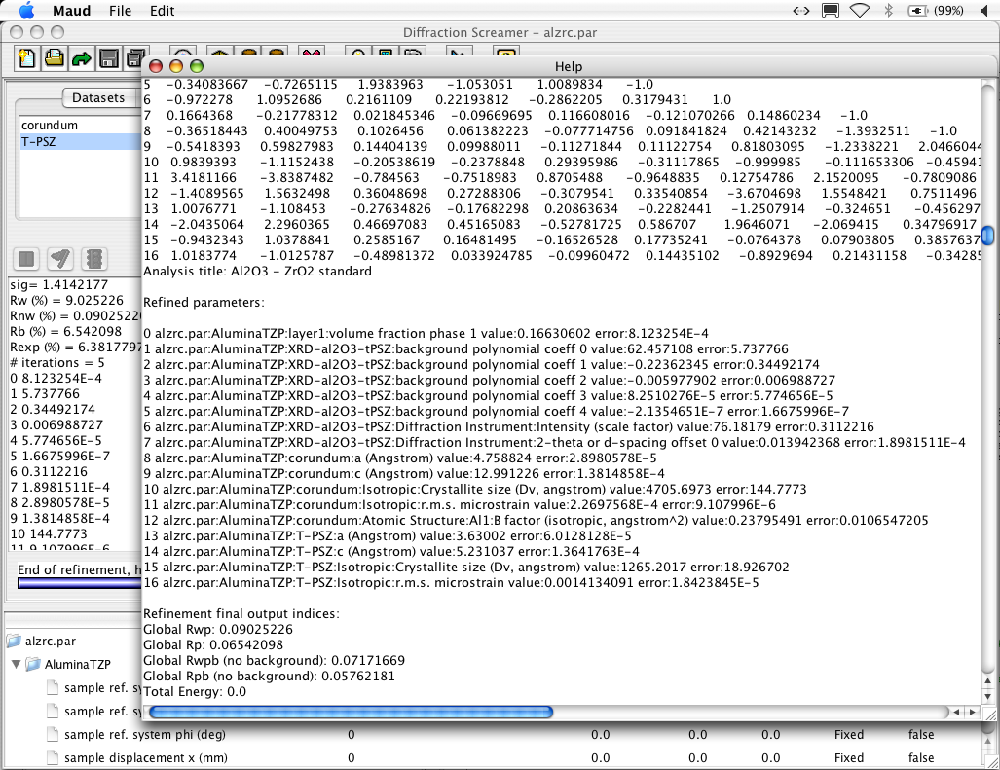
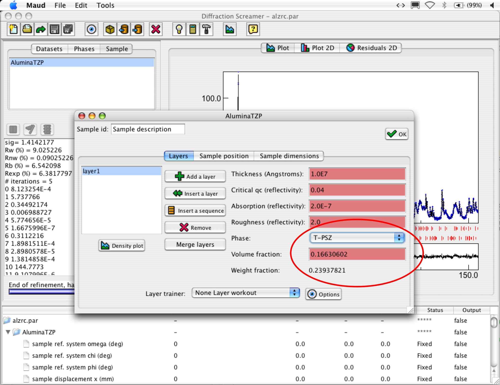
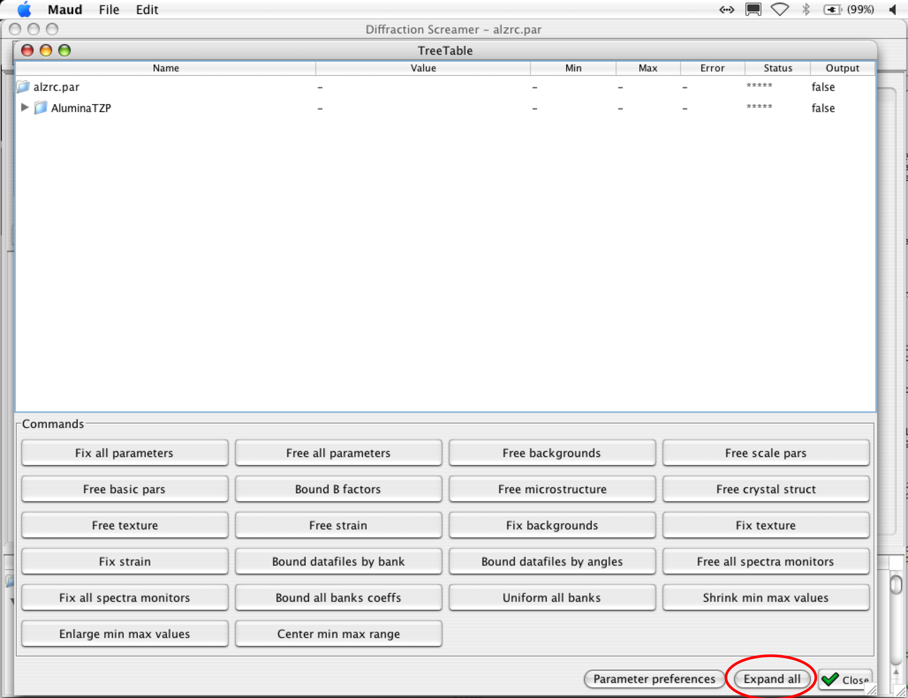

Analyzing the results (step 5).
- First save the analysis using the 'Save' option in the 'File' menu.
- We are now ready to analyze the results (Each picture in the tutorial is in reality bigger than it appears; if you want to see more details,
try click with the right mouse button on it and open the picture in a new window or tab).
The first thing to do in a Rietveld refinement is to have a careful look at the plot window. Zoom
inside the plot panel (by click, hold and drag a rectangle in the plot) to check the details of the fitting,
see if there are peaks not fitted well, missing etc. Have a look on the residuals, from the residual
profile you may recognize peak shifts, asymmetry problems and profile shape problems. It is much more
easy to see them in the residuals than in the plot.
To have a bigger more customizable plot window click on the 'plot selected dataset' toolbar icon (the
one with a plot graph icon, circled in red in the following picture). A new standalone plot window will appear
with its own menu (on the Mac picture below it appears on top of the screen, in Windows it will be on top of the plot window).
Resize the window as you prefer (ATTENTION: do not enlarge it full screen with the button on the window bar, but resize it instead,
because Maud remember the size and position of the window and next time it will be hard for you to get
a smaller window if you need).
You can change some plot options by selecting the menu item 'Options' from the 'Plotting' menu of the
Plot window (see picture below).
Copying and pasting the plot in you favorite graphic program, or Word whatsoever is easy by selecting 'copy' in the 'Edit'
menu of the plot window (this works only in the standalone plot window).

Plot window
- The plot options window that appear when you select the menu item 'Options' from the 'Plotting' menu
permits you to customize the plot. By default Maud plot the intensities in sqrt (see the red annotation circle on the picture below)
but you can change it to linear or log scale. Some of the scaling in log are useful for reflectivity plots.
TIP: plotting the intensity in sqrt permits a better evaluation of the residual as they will be
plotted at iso-statistical-error because the intensities in diffraction have errors proportional to the sqrt(intensity).
Also you may better see small peaks compare to the big ones.

Plot window
You can change also the data markers. The kind of marker can be selected by changing the number of the marker (the default is 4)
There are already 10 markers defined in Maud (from 1 to 10), in addition if you put -1 in the data marker then
you will get a line for the data plot. If you want to change the marker appearance and get your ones
have a look at the 'marker.txt' file in your examples/databases/preferences directory. Simply add a new marker
at the end and define it. It is straightforward to understand how the script works.
Close the plot window at end. Remember to not leave opened Maud windows around has if you open one twice
there is no control and you can mess up the parameters a little.
- Now, select the 'Results' option from the 'Analysis' menu. A new window like in the picture shown below
will appear. You will find all the information listed in the text box during the
calculations. The most significant parameter concearning our quantitative analysis are visible in the
portion shown in the window. Scroll up or down to find it. At the beginning there is the list of peaks and then
the parameters correlation matrix, just after it there are the refined parameters. If you look you will find the
refined volumetric quantity of Al2O3 as a fraction of 1 (the T-PSZ quantity is complementary to 1).
Close the window when finished.

Plot window
- If you wish to get both volume fraction and weight fraction of the phases, it is better to browse the sample object.
In the main Maud window, select the 'sample' tab panel in the upper-left part of the window. Select the only sample present
there and press the 'edit' toolbar button ('eye' toolbar button). A new window will appear like in the picture below.
Looking at the picture where the red circle is, you can select the phase you want and see the volume and phase
fractions. Errors are reported only for the refined phase fraction in the result (up) or parameter list (below) windows.

Parameter list window
- You may check the entire parameter list to see which parameters the program has been set refinable
automatically. TIP: actually the parameter list panel below the plot does not have a button/options to expand the
entire tree of objects/parameters (it will in the future). But if you choose 'Parameters list' from the 'Analysis' menu bar,
the a new window will appear. Enlarge the window by dragging down its lower/right corner until you will see all the
buttons in the lower panel of the window and press the 'Expand all' button near the 'Close' button in the lower-right corner.

Parameter list window